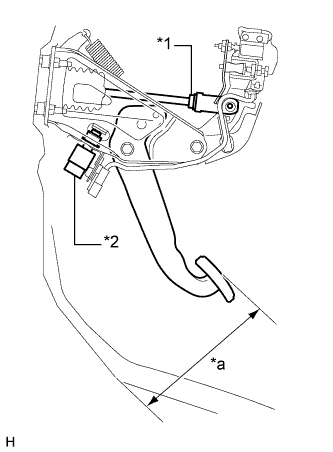
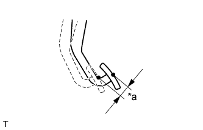

ПЕДАЛЬ ТОРМОЗА (для моделей с вакуумным усилителем тормозной системы) > РЕГУЛИРОВКА |
| 1. ПРОВЕРЬТЕ ВЫСОТУ ПЕДАЛИ ТОРМОЗА |
|  |
Проверьте высоту педали тормоза.
| Параметр / Устройство | Заданные условия |
| Для моделей с левосторонним рулевым управлением | 157,2 - 167,2 мм (6,19 - 6,58 дюйма) |
| Для моделей с правосторонним рулевым управлением | 160,2 - 170,2 мм (6,31 - 6,70 дюйма) |
| *a | Высота педали |
| *1 | Контргайка вилки |
| *2 | Выключатель стоп-сигналов в сборе |
Отрегулируйте высоту педали тормоза.
Отсоедините разъем выключателя стоп-сигналов
Снимите выключатель стоп-сигналов в сборе.
Ослабьте контргайку вилки штока.
Отрегулируйте высоту педали тормоза, поворачивая шток.
Затяните контргайку вилки штока.
Вставьте выключатель стоп-сигналов в монтажный переходник таким образом, чтобы корпус выключателя касался педали тормоза.
Поверните выключатель на четверть оборота по часовой стрелке.
Подсоедините разъем к выключателю.
Проверьте зазор выключателя.
| 2. ПРОВЕРЬТЕ СВОБОДНЫЙ ХОД ПЕДАЛИ ТОРМОЗА |
|  |
Выключите двигатель. Несколько раз нажав педаль тормоза, добейтесь, чтобы в усилителе тормозной системы не осталось разрежения. Отпустите педаль тормоза.
| *a | Свободный ход педали тормоза |
Нажимайте на педаль до тех пор, пока не почувствуете небольшое сопротивление. Замерьте расстояние, как показано на рисунке.
Если свободный ход педали не соответствует требованиям, проверьте зазор выключателя стоп-сигналов.
| 3. ПРОВЕРЬТЕ ОСТАТОЧНЫЙ ХОД ПЕДАЛИ ТОРМОЗА |
Отпустите стояночный тормоз.
Нажмите на педаль тормоза при работающем двигателе и измерьте остаточный ход педали.
| Параметр / Устройство | Заданные условия |
| Для моделей с левосторонним рулевым управлением (с механической трансмиссией) | Более 102 мм (4,02 дюйма) |
| Для моделей с левосторонним рулевым управлением (с автоматической трансмиссией) | Более 105 мм (4,13 дюйма) |
| Для моделей с правосторонним рулевым управлением | Более 108 мм (4,25 дюйма) |